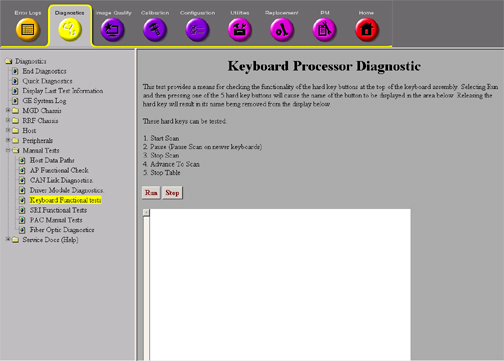

Operating Documentation
Direction 5133315-3, Rev# 14
Signa EXCITE HD 1.5T Service Methods
Module Version 1.0, Version Date 5/3/07
Operating Documentation |
| Required Persons | Preliminary Reqs | Procedure | Finalization |
|---|---|---|---|
| 1 | Not Applicable | 5 mins | Not Applicable |
This test provides a means of checking the functionally of the hard key buttons at the top of the keyboard assembly .
| Last Update | 08/18/2004 |
On the Scan Desktop, end any patient exams that may be running at the time.
Go to the Service Desktop and on the Common Service Desktop, go to the Diagnostics Tab and start the [Keyboard Processor Diagnostics].
Illustration 1: Keyboard Processor Diagnostics

Selecting Run and then pressing one of the 5 hard key buttons will cause the name of the button on the display area. Releasing the hard key will result in its name being removed from the display below.
Click the <Start Scan>, <Stop Scan>, <Advance to Scan>, <Pause> and <Stop Table> one at a time. Each should have a response in the display window.
If there is no response from the system when pressing the button, check the cabling to the keyboard. If the cabling is OK, then replace that part of the keyboard.
No finalization steps.